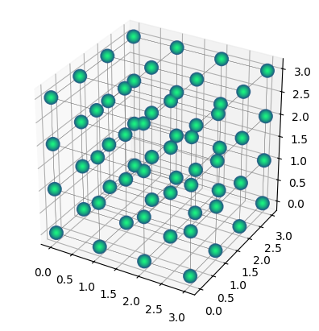
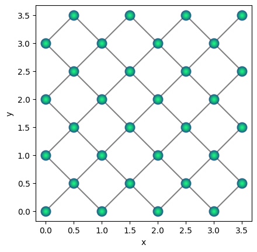
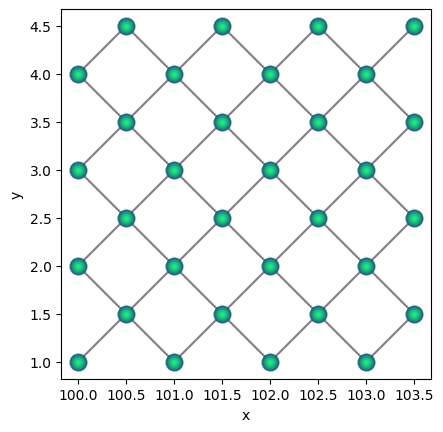
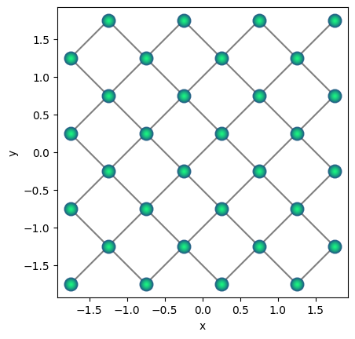
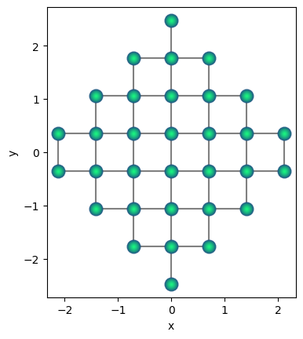
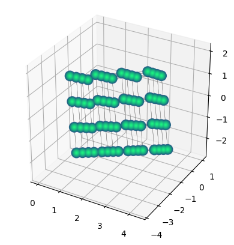
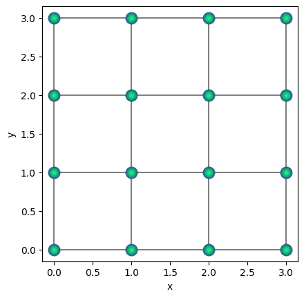
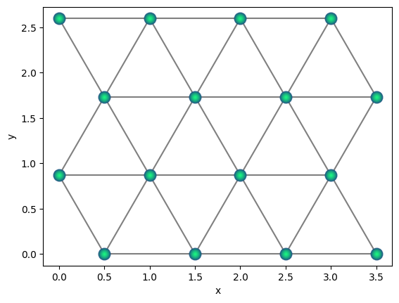

Creating and manipulating Qbits#
import qse
import numpy as np
1. Create Qbits.#
A Qbits object can represent :
An arbitrary qubit layout.
A repeated structure.
Qbits objects can be created in different ways. Let’s see how it is done by performing providing some examples.
1.1. Specify the qubits positions.#
The first way of creating a Qbits object is by specifying the positions of their qubits in the cartesian coordinate system. With the labels parameter we are assigning a label to each qubit.
coords = np.array(
[
[0.76, 0, 0.58],
[-0.76, 0, 0.58],
[0, 0, 0],
]
)
qse.Qbits(positions=coords, labels=["qbit1", "qbit2", "qbit3"])
Qbits(
Qbit(label='qbit1', position=[0.76, 0.0, 0.58], state=[(1+0j), 0j], index=0),
Qbit(label='qbit2', position=[-0.76, 0.0, 0.58], state=[(1+0j), 0j], index=1),
Qbit(label='qbit3', position=[0.0, 0.0, 0.0], state=[(1+0j), 0j], index=2),
pbc=False,
...)
1.2. Add single Qbit objects.#
Single Qbit objects can be added to form a Qbits object. Let’s build again the Qbits object we saw in section 1.1 this way.
qbits = qse.Qbits()
for coord in coords:
qbit = qse.Qbit(position=coord)
qbits.extend(qbit)
qbits
Qbits(
Qbit(label='X', position=[0.76, 0.0, 0.58], state=[(1+0j), 0j], index=0),
Qbit(label='X', position=[-0.76, 0.0, 0.58], state=[(1+0j), 0j], index=1),
Qbit(label='X', position=[0.0, 0.0, 0.0], state=[(1+0j), 0j], index=2),
pbc=False,
...)
2. Qbits methods.#
2.1. Draw qbits.#
After the cells are created, we can use the repeat method to generate repeated structure. The argument of repeat can be a sequence of three integers indicating the number of repetitions on each direction or a simple integer indicating equal repetition on each direction. Once the repeated structure is created, we can use the draw method to visualise it.
qbits = qse.Qbits(cell=np.eye(3), positions=np.zeros((1, 3)))
qbits = qbits.repeat((4, 4, 4))
qbits.draw(radius="nearest")

Our drawing function is also able to draw 2d structures. We can see an example of this in the cell below, that creates and draws a 2d Qbits object.
cell = np.eye(2)
positions = np.array(
[
[0.0, 0.0],
[0.5, 0.5],
]
)
qbits = qse.Qbits(cell=cell, positions=positions)
qbits = qbits.repeat((4, 4))
qbits.draw(radius="nearest")

2.2. Translate repeated structure.#
We can translate our repeated structures using the translate method, to which we can input an xyz vector that dictates how much the structure is translated in each direction.
qbits.translate((100, 1))
qbits.draw(radius="nearest")

Translations of the structure can also be made using the set_centroid method, as we can see below.
qbits.set_centroid((0, 0))
qbits.draw(radius="nearest")

2.3. Rotate structures.#
One can use the method rotate to perform lattice rotations, specifying the angle and the axis along which the rotation will be performed.
qbits.rotate(45)
qbits.draw(radius="nearest")

With the method euler_rotate we can rotate a lattice by inputting the angles \(\phi\), \(\theta\), \(\psi\) in degrees, as shown below.
qbits = qse.Qbits(cell=np.eye(3), positions=np.zeros((1, 3)))
qbits = qbits.repeat((4, 4, 4))
qbits.euler_rotate(30, 80, 70)
qbits.draw(radius="nearest")

One can often use mathematical transformations to generate more complex lattice structures. Below is an illustration to generate triangular lattice using square lattices.
a = 1.0
qbits = qse.lattices.square(
lattice_spacing=a, repeats_x=4, repeats_y=4
) # square lattice
qbits.draw(radius="nearest")
shift = 0.5 * a
scale = a * np.sqrt(3) / 2
# shift alternating rows by half of lattice spacing
qbits.positions[::2, 0] += shift
# scale the y-coordinates to insure nearest neighbour
# spacing is 'a'
qbits.positions[:, 1] *= scale
qbits.draw(radius=1.0)

